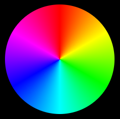

(update:2025/7/25)
ウィジットの色の指定方法について記しています。
RGBモデルでは、Red(赤)、Green(緑)、Blue(青)の光の三原色を合成することによって、様々な色を表現することができます。PCのディスプレイで色を表現するときには、三つの色を合成して使用する方法で、混ぜるほど明るい色になるため加法混色とも呼ばれています。表現できる色の数は、赤・緑・青のそれぞれの色の強さを０～２５５で変化させることができるので256×256×256＝16,777,216通りの色を表現することができます。以下にRGBモデルでの色の指定方法を記します。
CSSファイルにカラーネームを直接指定することで色を指定することができます。カラーネームとしては、W3Cの勧告で基本的な色のキーワードと拡張カラーキーワードが定められています。なお、ASCIIコードでは、大文字と小文字を区別しません。
例．h3 { color:beige; background-color:black; }
各々のカラーネームには、対応する数値が定められています。１６進数の数値で色を指定する場合は次の例に示すように＃＋１６進数の形式で表記します。
例．h2 { color:#800080; background-color:#32cd32; }
色の指定を１０進数で行う場合は、０～２５５の範囲の数値を指定します。０より小さな数値を指定した場合は０となり、２５５を超える数値を指定した場合は２５５となります。
例．h2 { color:rgb(0, 255, 0); background-color:rgb(0, 0, 255) }
色の指定をパーセント表記で行う場合は、０～１００%の範囲のパーセント値を指定します。０より小さな数値を指定した場合は０となり、１００を超える数値を指定した場合は１００となります。
例．h2 { color:rgb(0, 100%, 0); background-color:rgb(0, 0, 100%) }
上記のRGBカラーモデル(10進数)にアルファ値を拡張したものです。色の不透明度を指定することができます。アルファ値としては０～１．０を指定します。０は透明、１．０は不透明となります。
例．h1 { color:rgba(255, 128, 0, 0.5); background-color:rgba(0, 255, 128, 1.0) }
上記のRGBカラーモデル(パーセント)にアルファ値を拡張したものです。色の不透明度を指定することができます。アルファ値としては０～１．０を指定します。０は透明、１．０は不透明となります。
例．h1 { color:rgba(100%, 50%, 0%, 0.5); background-color:rgba(0, 100%, 50%, 1.0) }
hslモデルは、色を表現する方法一つです。色相(Hue)、彩度(Saturation)、輝度(Lightness)の三つの要素で色を表しています。色相が主となる表現方法であり、人間の視覚に近い色の表現方法です。

色相(Hue)
色の波長や色味を示すもので、０～３６０度の範囲で設定します。赤が０度、緑が１２０度、青が２４０度となり、環状に配置（色相環）された色相の角度で色を表します。
彩度(Saturation)
色の濃さや鮮やかさを表すもので、０～１００％の範囲で設定します。数値が高いほど色は濃くなり、低いほどグレーに近づきます。
輝度(Lightness)
色の明るさを表し、０～１００％の範囲で設定します。数値が高いほど明るくなり、低いほど暗くなります。輝度０％は黒、輝度100％は白、輝度５０％は標準になります。
hslカラーモデルの表記の形式は、Hue:0～360 Saturation:0～100% Lightness:0～100%となります。
例．h2 { color:hsl( 120, 100%, 50%) }
hslカラーモデルにアルファ値を拡張したものです。色の不透明度を指定することができます。アルファ値としては０～１．０を指定します。０は透明、１．０は不透明となります。
例．h2 { color:hsla( 240, 100%, 50%, 1.0) }
#include <gtkmm.h>
#include <iostream>
#include <gtkmm/cssprovider.h>
class MyWindow : public Gtk::Window
{
public:
MyWindow();
virtual ~MyWindow() = default;
private:
Gtk::Label m_label1, m_label2, m_label3;
protected:
// signal handler:
static void on_parsing_error( const Glib::RefPtr<const Gtk::CssSection>& sec, const Glib::Error& err );
// child widgets:
Gtk::Box m_box;
Glib::RefPtr<Gtk::CssProvider> m_refCssProvider;
};
MyWindow::MyWindow()
: m_box( Gtk::Orientation::VERTICAL )
{
set_title( "Css color" );
set_default_size( 320, 240 );
set_child( m_box );
m_box.set_margin( 25 );
m_box.set_spacing( 20 );
m_label1.set_text( "Sun" );
m_label1.set_name( "m-label_A" );
m_box.append( m_label1 );
m_label2.set_text( "Earth" );
m_label2.set_name( "m-label_B" );
m_box.append( m_label2 );
m_label3.set_text( "Saturn" );
m_label3.set_name( "m-label_C" );
m_box.append( m_label3 );
// Load extra CSS file
m_refCssProvider = Gtk::CssProvider::create();
Gtk::StyleContext::add_provider_for_display( get_display(), m_refCssProvider,
GTK_STYLE_PROVIDER_PRIORITY_APPLICATION );
m_refCssProvider->signal_parsing_error().connect(
[]( const Glib::RefPtr<const Gtk::CssSection>& sec, const Glib::Error& err )
{ on_parsing_error( sec, err ); }
);
m_refCssProvider->load_from_path( "style.css" );
}
void MyWindow::on_parsing_error( const Glib::RefPtr<const Gtk::CssSection>& sec, const Glib::Error& err )
{
Gtk::CssLocation s_location, e_location;
std::cerr << "on_parsing_error(): " << err.what() << std::endl;
if ( sec ) {
Glib::RefPtr<const Gio::File> file = sec->get_file();
if ( file ) {
std::cerr << " URI = " << file->get_uri() << std::endl;
}
s_location = sec->get_start_location();
e_location = sec->get_end_location();
std::cerr << " start : " << s_location.get_lines()+1
<< ", end : " << e_location.get_lines()+1 << std::endl;
std::cerr << " s_pos : " << s_location.get_line_chars()
<< ", e_pos : " << e_location.get_line_chars() << std::endl;
}
}
int main( int argc, char* argv[] )
{
auto app = Gtk::Application::create( "gtkmm4.example" );
return app->make_window_and_run<MyWindow>( argc, argv );
}
window {
background-color: aquamarine;
}
#m-label_A {
background-color: rgba( 253, 245, 230, 0.7 ); /* oldlace */
color: rgb( 34, 139, 34 ); /* foresgreen */
font-size: 30px;
}
#m-label_B {
background-color: #f5f5dc; /* beige */
color: rgba( 100%, 50%, 0%, 0.8 ) ; /* darkorange */
font-size: 30px;
}
#m-label_C {
background-color: hsl( 120, 100%, 50% ); /* lime */
color: hsla( 240, 100%, 50%, 0.5 ); /* solid blue */
font-size: 30px;
}